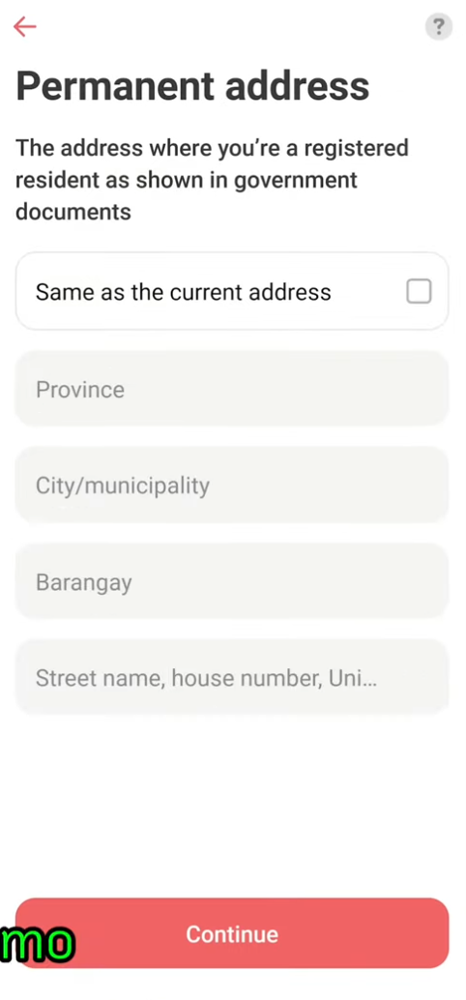
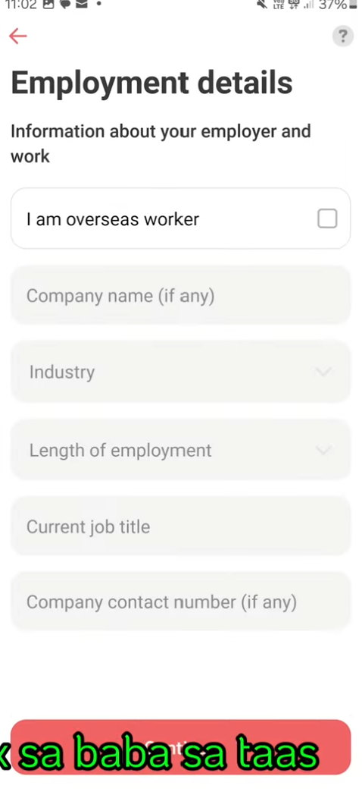
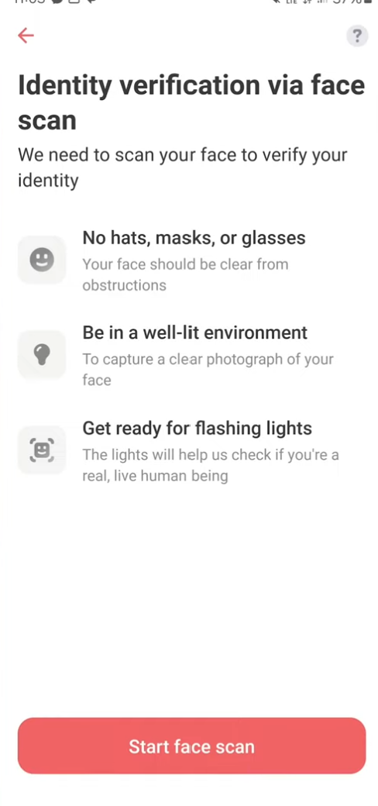
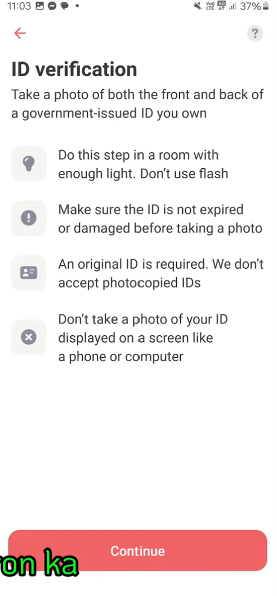
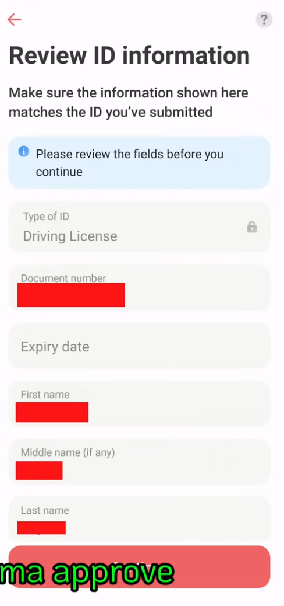

Same fields, same backend, same eligibility logic. Only the wrapper UX is different.
No progress indicator. Users don't know how many steps remain or how long it will take.
Progress bar + step counter + encouragement text. Users see where they are and what's left.